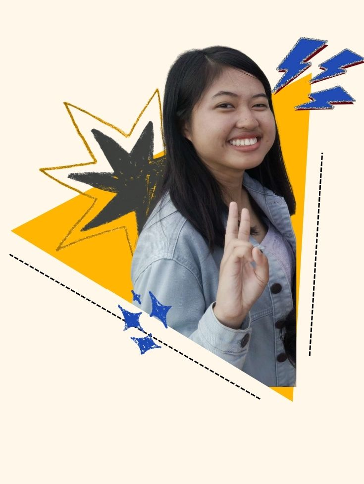
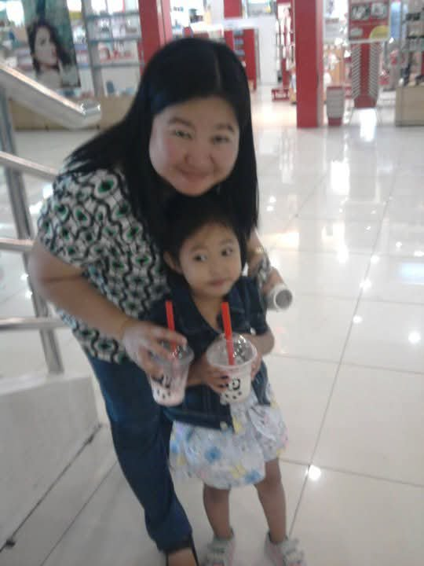
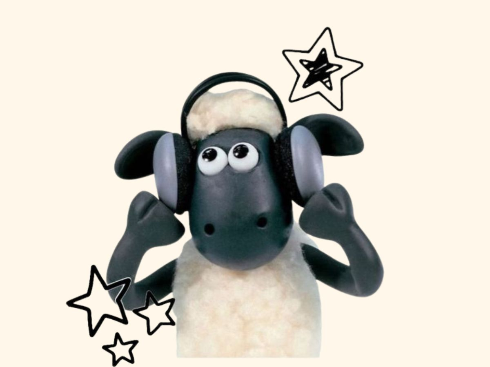
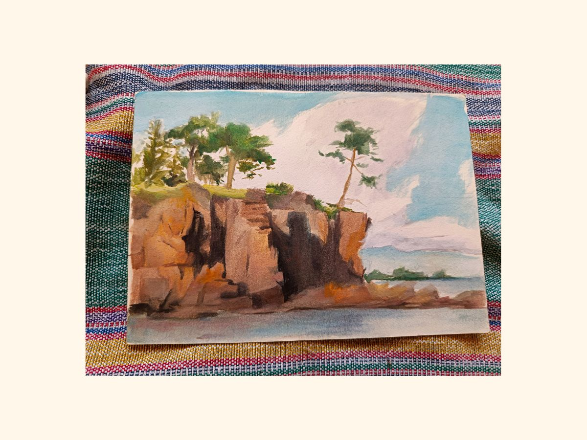
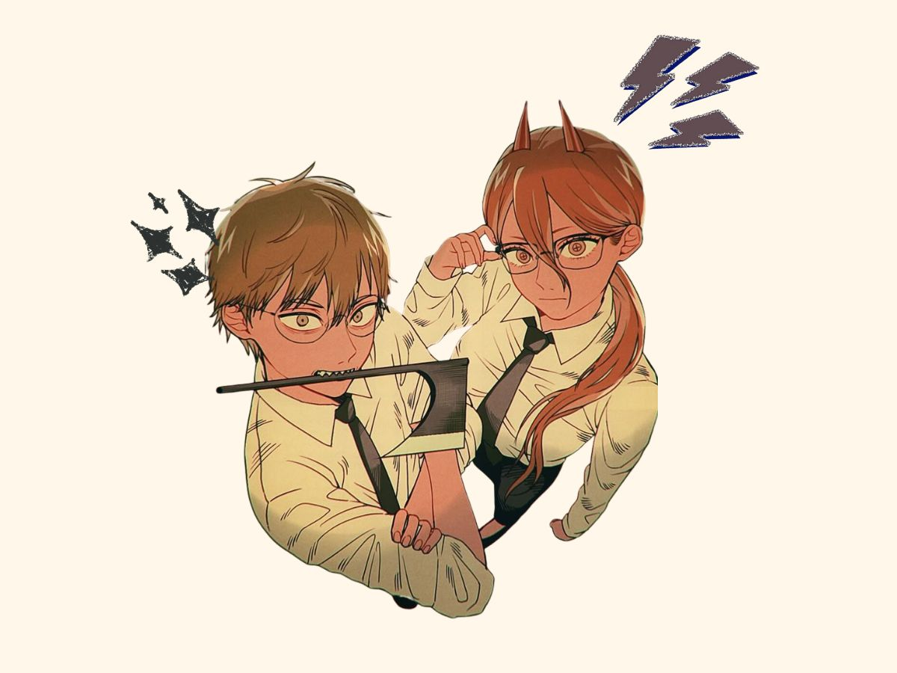
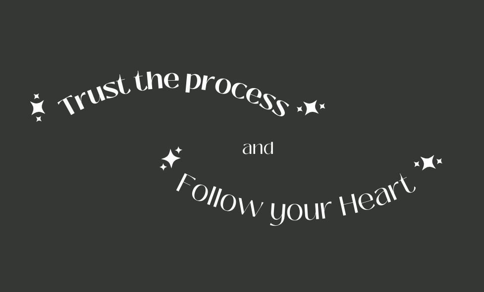

Welcome to my autobiography website. A small website all about me

I was born on November 15, 2006 and for the past 18 years, lived in my hometown, Isulan, Sultan Kudarat. I have two siblings, and I’m smack dab in the middle. The chances of me stealing a cat are very high, and so are the chances of me being asleep by 9pm. My Steam playtime hours are 115 hours long and most of that can be blamed on Red Dead Redemption 2. I would also rather spend money on art materials than clothes. In my defense, I do make pretty good art.
As a kid, I was a pain in the ass, just like every other kid at that age. My friends could be counted on one hand, and I credit that to my debilitating shyness. At my teachers’ insistence, I found myself ironically joining many clubs and competitions, including journalism, math competitions, and dance groups (random, I know). In high school, that’s when I went digital with my art because I was inspired by my older sister’s friend, Fraine. My friends could now thankfully be counted on more than one hand. I was more than happy to go off to college with happy high school memories.



